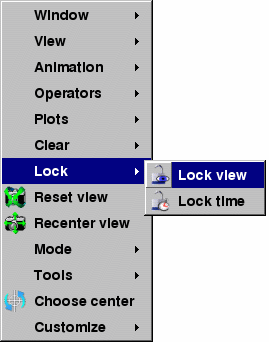

|
| Figure 25 |
The Operator menu and toolbar both have options for you to remove all operators from a plot. Each plot has a list of applied operators and clicking the Remove all operators menu option or icon will remove all operators from each plot that is selected in the Plot list. Plots that have been drawn are regenerated.
|
| Figure 25 |
|  |
| Figure 26 |